2
Smalriemseweg
🎯 1970
🔑 90% koop 🏬 33% flats
geen foto's
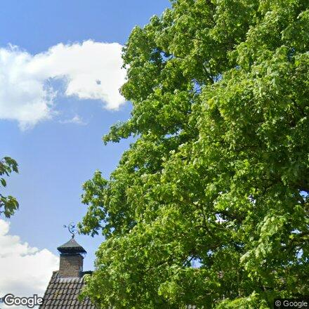
nok-zoom (midden)
4
Oranjestraat
🔴 1935
🔑 83% koop 🏢 33% corporatie
geen foto's
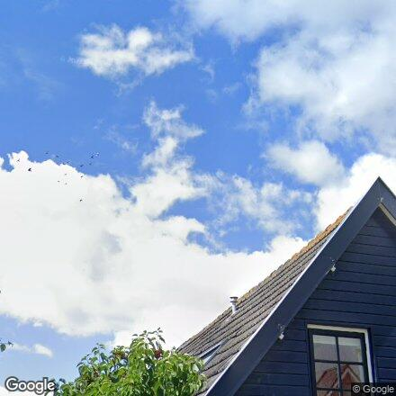
nok-zoom (midden)
7
Sportveldstraat
🎯 1965
🔑 84% koop 🏢 33% corporatie
geen foto's
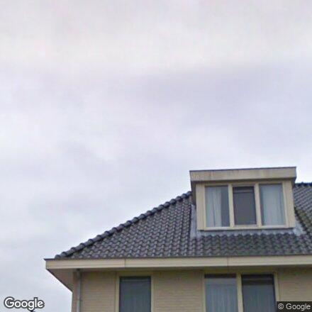
nok-zoom (midden)
10
Hofplein
🎯 1971
🔑 76% koop 🏢 40% corporatie
geen foto's
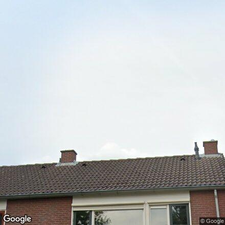
nok-zoom (midden)
11
De Lagewaard
🎯 1965
🔑 70% koop 🏢 25% corporatie
geen foto's
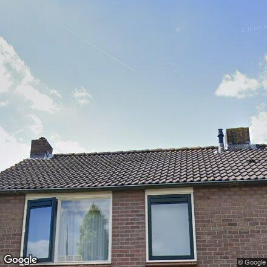
nok-zoom (midden)
12
De Wielstraat
🎯 1978
🔑 90% koop 👴 42% 65+
geen foto's
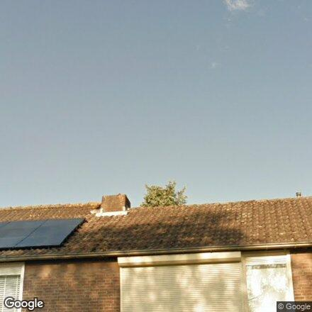
nok-zoom (midden)
13
Christinalaan
🎯 1969
🔑 96% koop 🏢 100% corporatie 👴 33% 65+
geen foto's
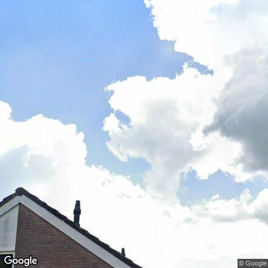
nok-zoom (midden)
15
Julianalaan
🎯 1975
🔑 60% koop 🏢 43% corporatie 👴 46% 65+
geen foto's
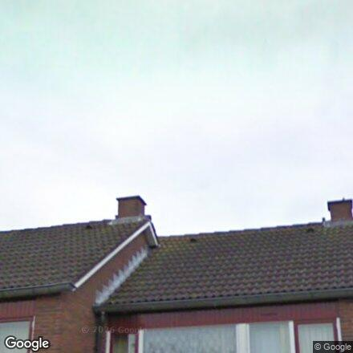
nok-zoom (midden)
16
Irenelaan
🎯 1977
🔑 60% koop 🏢 33% corporatie
geen foto's
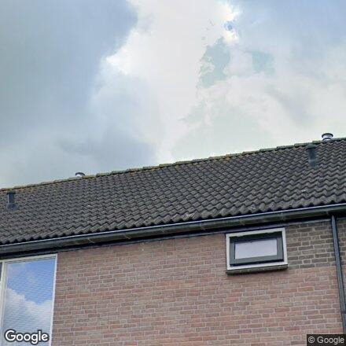
nok-zoom (midden)
17
Bernhardlaan
🟢 1983
🔑 70% koop 🏢 20% corporatie 👴 40% 65+
geen foto's
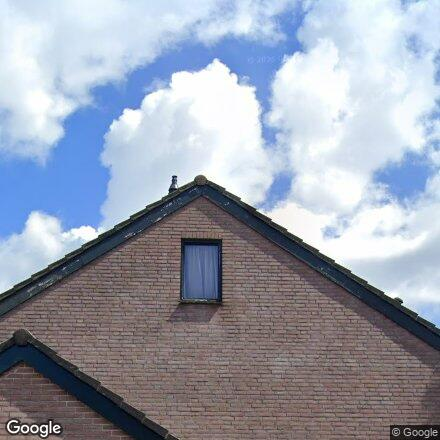
nok-zoom (midden)
20
De IJzeren pot
bouwjaar ?
🔑 90% koop
geen foto's
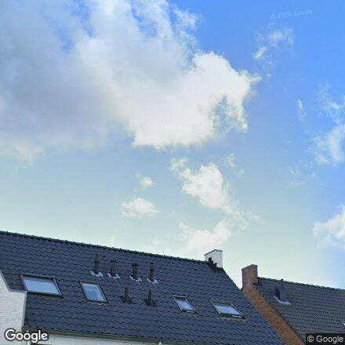
nok-zoom (midden)
22
Speulmanweg
🔴 2003
🔑 90% koop 🏬 33% flats
geen foto's
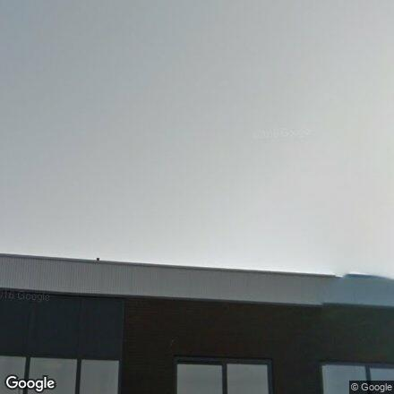
nok-zoom (midden)
24
Beijerdstraat
🟢 1985
🔑 80% koop 👴 40% 65+
geen foto's
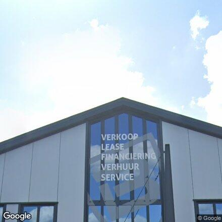
nok-zoom (midden)
25
Burgemeester Kuijkstraat
🟡 1990
🔑 47% koop 🏢 45% corporatie 🏬 40% flats
geen foto's
26
Burgemeester de Bruynstraat
🟡 1988
🔑 85% koop 🏢 25% corporatie
geen foto's

nok-zoom (midden)
27
Burgemeester van Everdingenstraat
🟡 1988
🔑 100% koop 👴 37% 65+
geen foto's
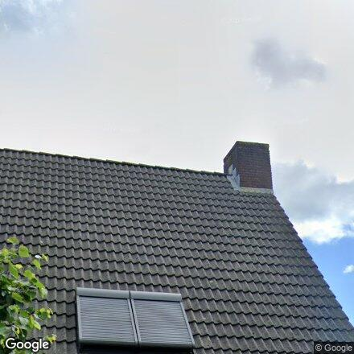
nok-zoom (midden)
28
Burgemeester van Mourikstraat
🔴 1996
🔑 100% koop
geen foto's
nok-zoom (midden)
30
J. van Zantenstraat
🔴 2002
🔑 100% koop
geen foto's
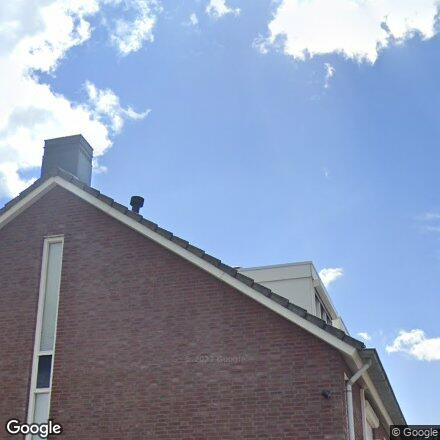
nok-zoom (midden)
32
Burgemeester Deysstraat
🔴 2006
🔑 90% koop
geen foto's
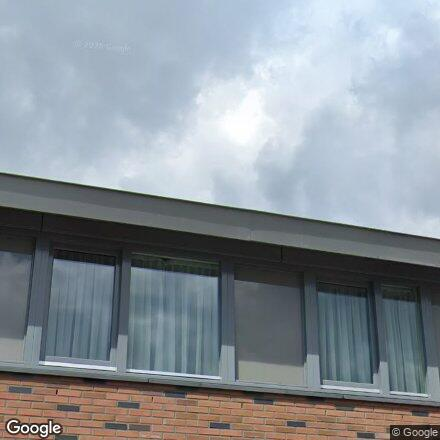
nok-zoom (midden)
36
Slotstraat
🎯 1971
🏢 100% corporatie 👴 33% 65+
geen foto's
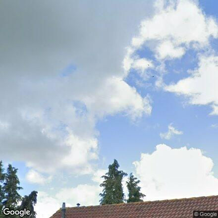
nok-zoom (midden)
37
Breedendamlaan
🟡 1988
🔑 100% koop 👴 38% 65+
geen foto's
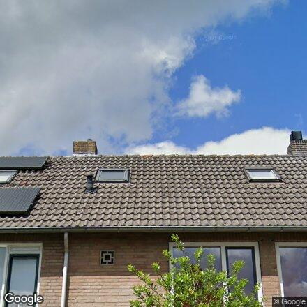
nok-zoom (midden)
38
Vroonland
🎯 1971
🔑 100% koop 👴 36% 65+
geen foto's
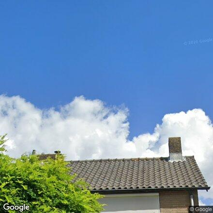
nok-zoom (midden)
39
Belvédèrelaan
🎯 1971
🔑 100% koop 👴 33% 65+
geen foto's
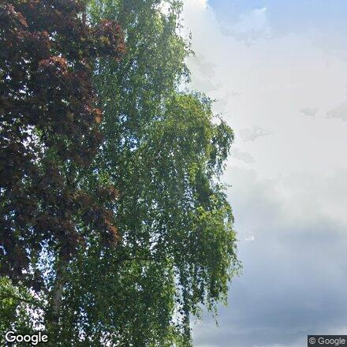
nok-zoom (midden)
40
Beneden Molenweg
🎯 1971
🔑 100% koop
geen foto's
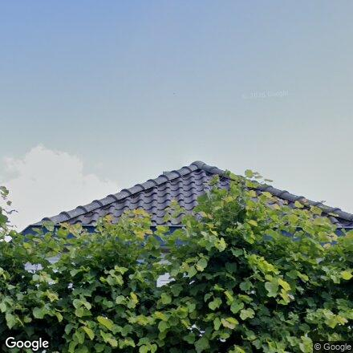
nok-zoom (midden)
42
Versendael
🔴 1998
🔑 100% koop 👴 35% 65+
geen foto's
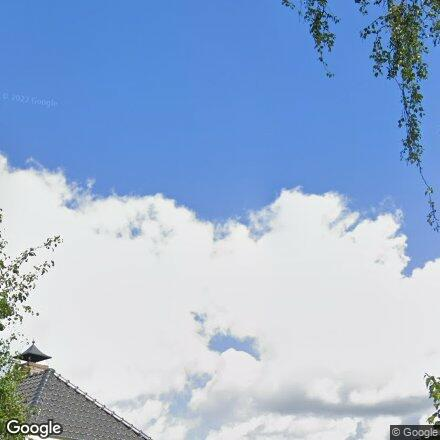
nok-zoom (midden)